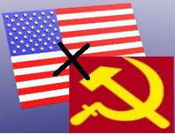

- Segunda guerra mundial
A Segunda Guerra Mundial foi um conflito militar global que durou de 1939 a 1945,
envolvendo a maioria das nações do mundo — incluindo todas as grandes potências
— organizadas em duas alianças militares opostas: os Aliados e o Eixo..
| EIXO |
ALIANÇA |
| Alemanha |
França |
| Italia |
Reino Unido |
| Japão |
Estados Unidos |
clique aqui e acesse mais imformações
- A guerra de canudos
Guerra de Canudos ou Campanha de Canudos foi um conflito armado
que envolveu o Exército Brasileiro e membros da comunidade sócio-religiosa
liderada por Antônio Conselheiro, em Canudos, no interior do estado da Bahia.
clique aqui e acesse mais imformações
- Racismo estrutural
O racismo estrutural é o racismo que está presente na própria estrutura social.
Segundo essa concepção, o racismo não seria uma anormalidade ou "patologia",
mas o resultado do funcionamento "normal" da sociedade.
clique aqui e acesse mais imformações
- Capitalismo x Socialismo

O capitalismo é um sistema econômico que se pauta na busca pelo lucro.
O socialismo defende a distribuição da riqueza produzida pela sociedade de maneira igualitária.
O capitalismo defende o individualismo e a propriedade privada. O socialismo defende
acoletividade,
a igualdade e se opõe à propriedade privada.
clique aqui e acesse mais imformações